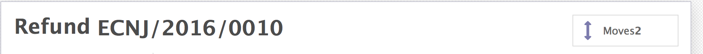

Just select the source...
and the destination location...
and confirm...
If you confirmed the stock movement locations and go back to the supplier refund you can see the connected stock moves just like in other invoices.
And you can access the supplier refund from the stock movement directly...